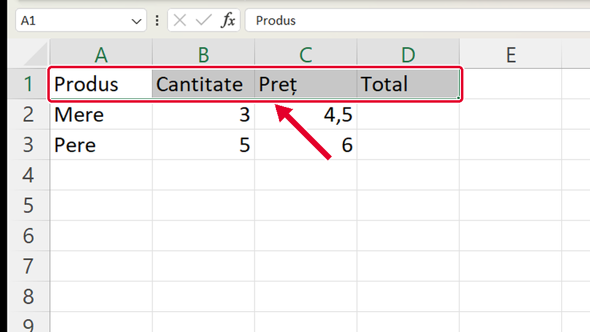
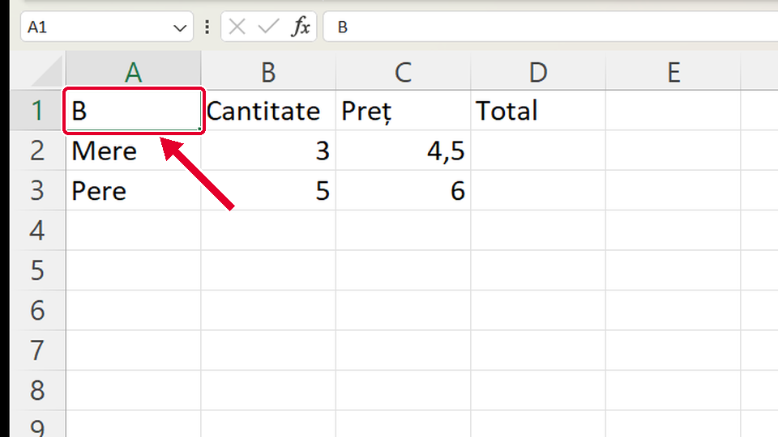
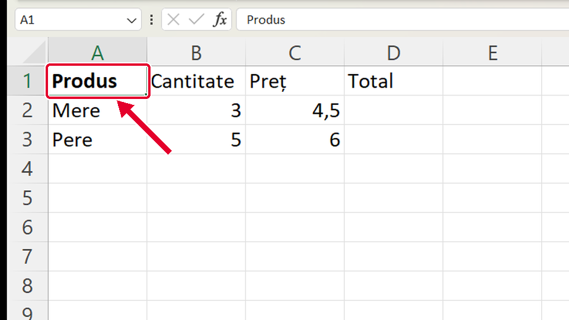

Început
Scris îngroșat cu Ctrl+B
Taste: Spațiu = pauză / continuă · ← și → = pasul anterior / următor · cu Tab ajungi la „Rulează singur”; acolo Spațiu îl pornește sau îl oprește. Poți apăsa și pe film.

Legat de asta
Se deschid într-o filă nouă, ca să nu pierzi filmul de aici.
- ApoiCum lărgești o coloană ↗
Dacă un text nu încape în coloană, o lărgești trăgând de linia dintre coloane.
- ApoiLățimea potrivită automat ↗
Lași Excel să potrivească singur lățimea coloanei, cu dublu-clic.
- ApoiCopiezi un tabel cu Ctrl+C și Ctrl+V ↗
Cu aceeași selecție prin tragere copiezi tot tabelul: Ctrl+C, Copiere (Copy), apoi Ctrl+V, Lipire (Paste).
Dacă nu-ți iese
Alege ce vezi pe ecran.
Ai apăsat Ctrl+B și scrisul a rămas (sau s-a făcut din nou) subțire.

De ce: Ctrl+B pune și scoate scrisul îngroșat: prima apăsare îl pune, a doua îl scoate.
Ce faci:
- Lași selecția cum e.
- Apeși Ctrl+B o singură dată și te uiți: acum e îngroșat.
Taste: Ctrl+B
Ai apăsat B și în celulă a rămas doar litera B; cuvântul Produs a dispărut.

De ce: Fără Ctrl, tasta B se scrie în celulă și înlocuiește ce era acolo.
Ce faci:
- Apeși imediat Ctrl+Z: Produs revine.
- Data viitoare ții întâi apăsat Ctrl, apoi apeși B. Dacă încă scrii în celulă, apeși Esc.
Taste: Ctrl+Z · Esc
S-a îngroșat doar Produs; celelalte capete de coloană au rămas subțiri.

De ce: Când ai apăsat Ctrl+B era selectată doar celula A1. Ctrl+B se pune pe ce e selectat.
Ce faci:
- Ții apăsat clic stânga pe A1 și tragi până la D1 (toate patru se colorează).
- Abia apoi apeși Ctrl+B. Dacă A1 se face subțire, mai apeși o dată Ctrl+B.
Taste: Ctrl+B